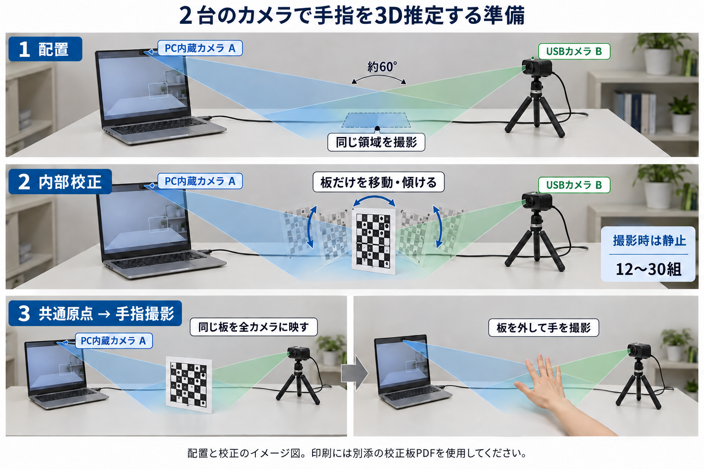
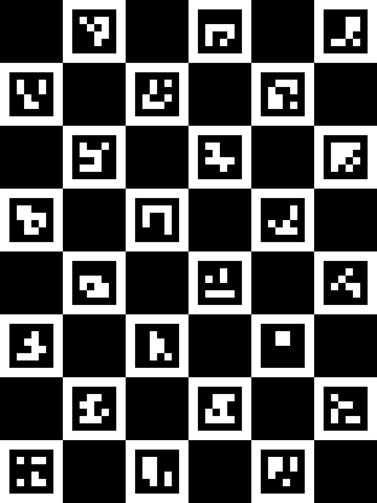

HandMotion / 2台で始める
カメラは固定。校正中は板を動かします。
PC内蔵カメラとUSBカメラで、同じ手と同じ校正板を別の角度から撮影します。まずは机の上の小さな共通領域を作ります。

AI生成の配置イメージ。図中の約60°は配置例で、必須の角度ではありません。図の模様は印刷に使わず、別添の校正板PDFを使います。
手元に用意するもの
- PC 1台（内蔵カメラA）
- USBカメラBと、位置を固定する台
- 作成済みの校正板PDFを印刷したA4用紙
- A4以上の硬い平板・定規・固定用テープ
置き方の目安
- 両方のカメラに手が大きく映る距離から始める。
- USBカメラを斜め横へ置き、両映像で同じ領域を確認する。
- 手や板を写す面に、左右から柔らかい照明を当てる。
- カメラ・PCのふた・ズームを固定する。
印刷 → 内部校正
同じ板を、いろいろな位置と傾きで写します。
1校正板は作成済みです
CHARUCO_A4_25mm.pdfをA4・「実際のサイズ」または100%で印刷します。1マス25 mmと確認線100 mmを実測し、平らで硬い板へ貼ります。印刷倍率が違った場合は、その用紙を校正に使わず印刷設定を直します。
2カメラA・Bを選び、同時表示を開始
印刷を済ませてから「校正3D統合」を開きます。「カメラを確認」でAにPC内蔵、BにUSBを選びます。「映像・手指推定を開始」を押し、両方の映像が更新されることを確認します。校正板の実寸確認欄にチェックします。
3板を止めて「静止した校正板を追加」
校正板の印刷面を両方のカメラへ向けます。1回押すと、全カメラの画像が1組として追加されます。板を少し移動・傾け、止めてから次を追加します。カメラの位置は変えません。
| 取得の例 | 板の位置・向き | 操作 |
|---|
| 1〜4組 | 共通領域の左上・右上・左下・右下 | 各位置で静止して1回追加 |
| 5〜8組 | 同じ4位置で、板を少し左右に傾ける | 印刷面が両方に見える範囲 |
| 9〜12組 | 同じ4位置で、板を少し上下に傾ける | 両映像を確認して1回追加 |
| 13〜16組 | 少し手前・奥へ移し、向きも変える | ピントと板全体の映りを確認 |
これは取得順の例です。必要数は12〜30組。両カメラで板の位置と傾きが十分に変わることが大切です。「静止」「検出点」「位置範囲」のエラーが出たら、その表示に従って追加・再取得します。
4「内部校正を計算」を押す
各カメラのレンズによる画像の変形を推定します。専門的な焦点距離や歪み係数を手入力する必要はありません。「内部校正完了・共通原点は未設定」と表示されれば次へ進みます。
共通原点 → 手指観察
最後の静止板で、全カメラの座標をそろえます。
5測定する場所へ板を置き、「共通原点を設定」
これから手を動かす場所の近くに、同じ板を静止させます。板は立てても斜めでも構いません。印刷面と十分なマーカーが全カメラに見えることが条件です。全カメラの共通原点を1回の操作で設定します。

XYZは板の向きで決まります
原点：模様の左上外側の角（白い用紙の角ではありません）。
+X：板の印刷面を正面から見て右。
+Y：同じ見方で下。
+Z：板の平面に垂直な右手系の方向。この板規格では印刷面から板の裏側へ。
原点を設定した後、板を外しても座標はその場所に残ります。手の動きに合わせて原点が動くわけではありません。
6校正JSONを保存し、板を外して同じ片手を映す
「校正JSON保存」で設定を保存します。カメラを動かさず板を外し、両映像で同じ片手が見える場所へ手を入れます。「校正時からカメラ・PCのふた・焦点・ズームを動かしていない」と「同期未検証の探索表示として使用する」を確認すると3Dを表示します。
よくある疑問
- 矢状面・前額面・水平面へ厳密に置く必要は？
- 必須ではありません。校正で実際の位置・向きを求めます。ただし両カメラがほぼ同じ方向を見る配置や、片方で指が隠れる配置は避けます。
- 3台目はどこに置く？
- 2台で動作を確認してから、共通領域を別方向から見られる場所へ追加します。全3台に同じ印刷面が見える配置にして、3台分を再校正します。
- 一度校正したら再利用できる？
- 同じ機器・解像度・カメラ配置・焦点であることが条件です。カメラやPCのふたを動かしたら再校正します。ブラウザや公開URLの変更で機器IDが変わる場合もあります。
- 今すぐ押し込み量をmmで測れる？
- XYZは幾何推定です。通常カメラの同時露光や実寸精度は未検証です。まず既知寸法の静止標的で誤差を確認します。手指のXYZ変化だけで実際の押し込み量と判定しません。
動画はブラウザ内で処理し、この画面は録画OFFです。別タブへ切り替えるとカメラは停止するため、印刷・説明確認を済ませてから校正を開始してください。